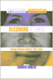
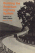

Browse
other Titles:
A B C
D E F
G H I
J K L
M N O
P Q R
S T U
V W X
Y Z |

|
Bacchanal
The Carnival Culture of Trinidad
Mason,
Peter
192 pp • 6x9 • Fall 1998
paper 978-1-56639-663-9
cloth 978-1-56639-662-2 |
|
Bachata
A Social History of a Dominican Popular Music
Hernandez,
Deborah Pacini
296 pp • 6x9 • Spring 1995
paper 978-1-56639-300-3
cloth 978-1-56639-299-0 |

|
Bachelors
of Science
Seventeenth Century Identity, Then and Now
Zack,
Naomi
264 pp • 6x9 • Spring 1996
paper 978-1-56639-436-9
cloth 978-1-56639-435-2 |

|
Back
to Earth
Tomorrow's Environmentalism
Weston,
Anthony
216 pp • 5.5x8.25 • Fall 1994
paper 978-1-56639-237-2
cloth 978-1-56639-236-5
|
|
Backyard
Revolution
Understanding the New Citizen Movement
Boyte,
Harry C.
288 pp • Fall 1980
paper 978-0-87722-229-3
cloth 978-0-87722-192-0 |

|
Bad
Faith, Good Faith, and Authenticity in Sartre's Early Philosophy
Santoni,
Ronald E.
288 pp • 5.5x8.25 • Spring 1995
paper 978-1-56639-320-1
cloth 978-1-56639-319-5 |
 |
Ball Don't Lie!
Myth, Genealogy, and Invention in the Cultures of Basketball
Colás, Yago
228 pp • 6x9 • Spring 2016
paper 978-1-4399-1243-0
cloth 978-1-4399-1242-3
|

|
Baltimore '68
Riots and Rebirth in an American City
edited by Elfenbein, Jessica I., Thomas L. Hollowak, and Elizabeth M. Nix
294 pp • 6x9 • Spring 2011
paper 978-1-4399-0662-0
cloth 978-1-4399-0661-3
|
|
The
Baltimore Book
New Views of Local History
edited
by Fee, Elizabeth, Linda Shopes and Linda Zeidman
256 pp • Fall 1991
paper 978-1-56639-184-9
cloth 978-0-87722-817-2 |

|
Barriers and Belonging
Personal Narratives of Disability
edited
by Jarman, Michelle, Leila Monaghan, and Alison Quaggin Harkin
286 pp • Fall 2016
paper 978-1-4399-1388-8
cloth 978-1-4399-1387-1 |

|
Baseball
Managers
Stats, Stories, and Strategies
Bloss,
Bob
400 pp • 6x9.2 • Spring 1999
cloth 978-1-56639-661-5
|
|
Bass
Line
The Stories and Photographs of Milt Hinton
Hinton,
Milt and David G. Berger
328 pp • 10.5x9.5 • Fall 1988
paper 978-0-87722-681-9
cloth 978-0-87722-518-8
|
|
"Batting
Cleanup, Bill Conlin"
edited
by Kerrane, Kevin, foreword by Dick Schaap
240 pp • 6x9 • Spring 1997
cloth 978-1-56639-541-0
|

|
The
Beat of My Drum
An Autobiography
Olatunji,
Babatunde with Robert Atkinson and Akinsola Akiwowo, foreword
by Joan Baez, introduction by Eric Charry
272 pp • 6x9 • Spring 2005
paper 978-1-59213-354-3
cloth 978-1-59213-353-6
|

|
Becoming
American, Becoming Ethnic
College Students Explore Their Roots
edited
by Dublin, Thomas
256 pp • 6x9 • Spring 1996
paper 978-1-56639-439-0
cloth 978-1-56639-438-3
|

|
Before
Roe
Abortion Policy in the States
Nossiff,
Rosemary
216 pp • 5.5x8.25 • Fall 2000
paper 978-1-56639-810-7
cloth 978-1-56639-809-1
|

|
Before
It's Too Late
The Child Guidance Movement in the United States, 1922-1945
Horn,
Margo
260 pp • Spring 1989
cloth 978-0-87722-589-8 |

|
Before
Their Time
Adult Children's Experiences of Parental Suicide
edited
by Stimming, Mary and Maureen Stimming
240 pp • 5.5x8.25 • Fall 1998
paper 978-1-56639-655-4
cloth 978-1-56639-654-7
|

|
Behind the Backlash
Muslim Americans After 9/11
Peek, Lori
230 pp • 6x9 • Fall 2010
paper 978-1-59213-983-5
cloth 978-1-59213-982-8
|

|
Behind the Mask of the Strong Black Woman
Voice and the Embodiment of a Costly Performance
Beauboeuf-Lafontant, Tamara
194 pp • 5.5x8.25 • Fall 2009
paper 978-1-59213-668-1
cloth 978-1-59213-667-4
|

|
Believing in Cleveland
Managing Decline in “The Best Location in the Nation”
Souther, J. Mark
288 pp • 6x9 • Fall 2017
paper 978-1-4399-1373-4
cloth 978-1-4399-1372-7
|

|
Berlusconi's Italy
Mapping Contemporary Italian Politics
Shin, Michael E. and John A. Agnew
184 pp • 5.5x8.25 • Spring 2008
paper 978-1-59213-717-6
cloth 978-1-59213-716-9
|

|
Bernard
Berenson and the Twentieth Century
Calo,
Mary Ann
288 pp • 5.5x8.25 • Fall 1993
paper 978-1-56639-117-7
cloth 978-1-56639-116-0
|
 |
Bernie Sanders and the Boundaries of Reform
Socialism in Burlington
Conroy, W. J.
With a new Preface by the Author
278 pp • 6x9 • Spring 2017
paper 978-1-4399-1480-9 |

|
The
Best of The Harvard Gay & Lesbian Review
edited
by Schneider, Jr., Richard, foreword by Edmund White
363 pp • 6x9 • Fall 1997
cloth 978-1-56639-596-0 |

|
The
Betrayal of the Urban Poor
Slessarev,
Helene
256 pp • 5.5x8.25 • Spring 1997
paper 978-1-56639-543-4
cloth 978-1-56639-542-7
|
|
Between
Melting Pot and Mosaic
African American and Puerto Ricans in the New York Political Economy
Torres,
Andrés
264 pp • 6x9 • Spring 1995
paper 978-1-56639-280-8
cloth 978-1-56639-279-2
|

|
Between
Race and Empire
African-Americans and Cubans before the Cuban Revolution
edited
by Brock, Lisa and Digna Casteñada Fuertes, foreword by Manning
Marable
289 pp • 6x9 • Spring 1998
paper 978-1-56639-587-8
cloth 978-1-56639-586-1
|

|
Between
the Lines
South Asians and Postcoloniality
edited
by Bahri, Deepika and Mary Vasudeva
384 pp • 6x9 • Fall 1996
paper 978-1-56639-468-0
cloth 978-1-56639-467-3
|

|
Between
Women
Domestics and Their Employers
Rollins,
Judith
256 pp • 5.5x8.25 • Fall 1985
paper 978-0-87722-491-4
cloth 978-0-87722-383-2 |

|
Beyond
Employment
Time, Work, and the Informal Economy
Offe,
Claus and Rolf G. Heinze, translated by Alan Braley
248 pp • 6x9 • Spring 1992
cloth 978-0-87722-951-3 |
|
Beyond
Formalism
Naming and Necessity for Human Beings
Rosenberg,
Jay F.
264 pp • 5.5x8.25 • Fall 1993
cloth 978-1-56639-118-4
|
|
Beyond
Morality
Garner,
Richard
424 pp • 6x9 • Fall 1993
paper 978-1-56639-108-5
cloth 978-1-56639-076-7 |
|
Beyond
Segregation
Multiracial and Multiethnic Neighborhoods in the United States
Maly,
Michael T.
288 pp • 6x9 • Fall 2004
paper 978-1-59213-135-8
cloth 978-1-59213-134-1
|

|
Beyond
the Barricades
The Sixties Generation Grows Up
Whalen,
Jack and Richard Flacks
324 pp • Spring 1989
paper 978-0-87722-707-6
cloth 978-0-87722-606-2 |

|
Beyond
the City Limits
Urban Policy and Economics Restructuring in Comparative Perspective
edited
by Logan, John R. and Todd Swanstrom
288 pp • Fall 1990
paper 978-0-87722-944-5
cloth N 978-0-87722-733-5 |
|
Beyond
the Market and the State
New Directions in Community Development
edited
by Bruyn, Severyn T. and James Meehan
272 pp • Fall 1987
cloth 978-0-87722-484-6 |

|
Beyond Preservation
Using Public History to Revitalize Inner Cities
Hurley, Andrew
248 pp • 6x9 • Spring 2010
paper 978-1-43990-229-5
cloth 978-1-43990-228-8
|

|
Beyond
the Schoolhouse Gate
Free Speech and the Inculcation of Values
Lane,
Robert Wheeler
224 pp • 5.5x8.25 • Spring 1995
paper 978-1-56639-275-4
cloth 978-1-56639-274-7
|
|
Bill Giles and Baseball
Lord, John B.
328 pp • 6x9 • Spring 2014
cloth 978-1-43990-786-3
|

|
Bioethics
in Social Context
edited
by Hoffmaster, Barry
248 pp • 6x9 • Fall 2000
paper 978-1-56639-845-9
cloth 978-1-56639-844-2
|

|
Birding
the Delaware Valley
A Comprehensive Guide to Birdwatching in Southeastern Pennsylvania,
Central and Southern New Jersey, and Northcentral Delaware
Harding,
John J. and Justin J. Harding
223 pp • 5.5x8.25 • Spring 1986
paper 978-0-87722-182-1
cloth 978-0-87722-179-1 |

|
BITS of Belonging
Information Technology, Water, and Neoliberal Governance in India
Dasgupta, Simanti
232 pp • 6x9 • Fall 2015
paper 978-1-43991-259-1
cloth 978-1-43991-258-4 |
 |
Biz Mackey, a Giant behind the Plate
The Story of the Negro League Star and Hall of Fame Catcher
Westcott, Rich, forewords by Monte Irvin and Ray Mackey III
160 pp • 5.375 x 8.5 • Fall 2017
cloth 978-1-4399-1551-6
|
|
Black
Baltimore
A New Theory of Community
McDougall,
Harold A.
272 pp • 6x9 • Spring 1993
paper 978-1-56639-193-1
cloth 978-1-56639-037-8
|
|
Black
City Cinema
African American Urban Experiences in Film
Massood,
Paula J.
280 pp • 6x9 • Fall 2002
paper 978-1-59213-003-0
cloth 978-1-59213-002-3
|

|
Black Communists Speak on Scottsboro
A Documentary History
edited by Howard, Walter T.
208 pp • 5.5x8.25 • Fall 2007
cloth 978-1-59213-597-4
|

|
Black
Corporate Executives
The Making and Breaking of a Black Middle Class
Collins,
Sharon M.
216 pp • 5.5x8.25 • Fall 1996
paper 978-1-56639-474-1
cloth 978-1-56639-473-4
|

|
The
Black Female Body
A Photographic History
Willis,
Deborah and Carla Williams
240 pp • 9x12 • Fall 2001
cloth 978-1-56639-928-9
|

|
Black
Power Ideologies
An Essay in African American Political Thought
McCartney,
John T.
264 pp • 6x9 • Spring 1992
paper 978-1-56639-145-0
cloth 978-0-87722-914-8 |

|
Black
Power, White Blood
The Life and Times of Johnny Spain
Andrews,
Lori
352 pp • 5.5x8.25 • Fall 1999
paper 978-1-56639-750-6 |

|
Black Regions of the Imagination
African American Writers between the Nation and the World
Dunbar, Eve
232 pp • 5.5x8.25 • Fall 2012
paper 978-1-4399-0943-0
cloth 978-1-4399-0942-3
|

|
Black
Theatre
Ritual Performance in the African Diaspora
edited
by Harrison, Paul Carter, Victor Leo Walker II and Gus Edwards
432 pp • 7x10 • Spring 2002
paper 978-1-56639-944-9
cloth 978-1-56639-943-2
|

|
Black Venus 2010
They Called Her "Hottentot"
Edited by Willis, Deborah
288 pp • 7x10 • Spring 2010
paper 978-1-4399-0205-9
cloth 978-1-4399-0204-2
|

|
Black
Women Writing Autobiography
A Tradition Within a Tradition
Braxton,
Joanne M.
240 pp • Fall 1989
paper 978-0-87722-803-5
cloth 978-0-87722-639-0 |

|
Black
Workers
A Documentary History from Colonial Times to the Present
edited
by Foner, Philip S. and Ronald L. Lewis
400 pp • Fall 1988
paper 978-0-87722-554-6
cloth 978-0-87722-592-8 |

|
Blow Up the Humanities
Miller, Toby
172 pp • 5.5x8.25 • Fall 2012
paper 978-1-4399-0983-6
cloth 978-1-4399-0982-9
|

|
Blue Juice
Euthanasia in Veterinary Medicine
Morris, Patricia
244 pp • 6x9 • Spring 2012
paper 978-1-4399-0706-1
cloth 978-1-4399-0705-4 |

|
Blue Skies
A History of Cable Television
Parsons, Patrick R.
816 pp • 6x9 • Fall 2007
cloth 978-1-59213-287-4 |
|
Boathouse Row
Waves of Change in the Birthplace of American Rowing
Brown, Dotty
288 pp • 10x8 • Fall 2016
cloth 978-1-4399-1282-9 |

|
Body Language
Sisters in Shape, Black Women's Fitness, and Feminist Identity Politics
Lau, Kimberly J.
204 pp • 5.5x8.25 • Fall 2011
paper 978-1-4399-0309-4
cloth 978-1-4399-0308-7
|

|
Borderless
Borders
U.S. Latinos, Latin Americans, and the Paradox of Interdependence
edited
by Bonilla, Frank, Edwin Meléndez, Rebecca Morales and María
de los Angeles Torres
336 pp • 6x9 • Spring 1998
paper 978-1-56639-620-2
cloth 978-1-56639-619-6
|

|
The Borders of Justice
edited by Balibar, Étienne, Sandro Mezzadra and Ranabir Samaddar
224 pp • 6x9 • Fall 2011
paper 978-1-4399-0686-6
cloth 978-1-4399-0685-9
|
|
Borrowed
Time
Artificial Organs and the Politics of Extending Lives
Plough,
Alonzo L.
195 pp • Spring 1986
cloth 978-0-87722-415-0 |
|
Borscht
Belt Bungalows
Memories of Catskill Summers
Richman,
Irwin
256 pp • 7x10 • Fall 1997
paper 978-1-59213-190-7
cloth 978-1-56639-585-4
|

|
The
Boss
J. Edgar Hoover and the Great American Inquisition
Theoharis,
Athan G. and John Stuart Cox
504 pp • Spring 1988
cloth 978-0-87722-532-4 |

|
The
Bottom Line
Observations and Arguments on the Sports Business
Zimbalist, Andrew
312 pp • 6x9 • Fall 2006
paper 978-1-59213-513-4
cloth 978-1-59213-512-7
|
|
Boundaries
of Art
Novitz,
David
296 pp • 5.5x8.25 • Fall 1992
cloth 978-0-87722-928-5 |
 |
The Boxing Scene
Hauser, Thomas
256 pp • 6x9 • Fall 2008
paper 978-1-59213-977-4
cloth 978-1-59213-976-7
|
|
Brains
and People
An Essay on Mentality and Its Causal Conditions
Robinson,
William S.
248 pp • Spring 1988
cloth 978-0-87722-548-5 |

|
The
Braves Encyclopedia
Caruso,
Gary
544 pp • 9x12 • Fall 1995
cloth 978-1-56639-384-3 |

|
The
Brazilian Sound
Samba, Bossa Nova, and the Popular Music of Brazil
McGowan,
Chris and Ricardo Pessanha
Revised and Expanded Edition
280 pp • 7x10 • Fall 2008
paper 978-1-59213-929-38
cloth 978-1-59213-928-6
|

|
Breaking
Bread
The Catholic Worker and the Origin of Catholic Radicalism in America
Piehl,
Mel
225 pp • Fall 1982
paper 978-0-87722-353-5
cloth 978-0-87722-257-6 |

|
Breaking
Even
The Financial Management of Not-for-Profit Businesses
Lohmann,
Roger A.
Fall 1981
paper 978-0-87722-247-7
cloth 978-0-87722-166-1 |
|
Bridge
of Light
Yiddish Film between Two Worlds
Hoberman,
J.
416 pp • 8x9.25 • Fall 1995
paper 978-1-56639-404-8
|
|
Bridging
the Americas
The Literature of Paule Marshall, Toni Morrison, and Gayl Jones
Coser,
Stelamaris
240 pp • 5.5x8.25 • Fall 1994
paper 978-1-56639-267-9
cloth 978-1-56639-266-2 |

|
Broken
Promise
The Subversion of U.S. Labor Relations Policy, 1947-1994
Gross,
James A.
422 pp • 6x9 • Fall 2003
paper 978-1-59213-225-6
|

|
Brooklyn!
An Illustrated History
Snyder-Grenier,
Ellen M.
304 pp • 8x10 • Spring 1996
paper 978-1-59213-082-5
cloth 978-1-56639-408-6
|
|
Building
America
The Democratic Promise of Public Work
Boyte,
Harry C. and Nancy N. Kari
272 pp • 5.5x8.25 • Spring 1996
paper 978-1-56639-458-1
cloth 978-1-56639-457-4 |
 |
Building Drexel
The University and Its City, 1891–2016
edited by Dilworth, Richardson and Scott Gabriel Knowles
400 pp • 6x9 • Fall 2016
cloth 978-1-4399-1420-5 |

|
Building
the American Highway System
Engineers As Policy Makers
Seely,
Bruce E.
312 pp • Spring 1987
cloth 978-0-87722-472-3 |

|
Building
the Beloved Community
Maurice McCrackin's Life for Peace and Civil Rights
Bechtel,
Judith A. and Robert M. Coughlin, foreword by Daniel Berrigan
288 pp • Spring 1991
cloth 978-0-87722-783-0 |
|
Building the Urban Environment
Visions of the Organic City in the United States, Europe, and Latin America
Platt, Harold L.
302 pp • 6x9 • Fall 2015
paper 978-1-43991-237-9
cloth 978-1-43991-236-2
|

|
"Building Like Moses with Jacobs in Mind"
Contemporary Planning in New York City
Larson, Scott
198 pp • 6x9 • Spring 2013
paper 978-1-4399-0970-6
cloth 978-1-4399-0969-0
|

|
Bullying
The Social Destruction of Self
Martocci, Laura
220 pp • 6x9 • Fall 2014
paper 978-1-43991-073-3
cloth 978-1-43991-072-6
|

|
The
Business of Practicing Law
The Work Lives of Solo and Small-Firm Attorneys
Seron,
Carroll
240 pp • 6x9 • Spring 1996
paper 978-1-56639-407-9
cloth 978-1-56639-406-2
|

|
But
Still, Like Air, I'll Rise
New Asian American Plays
edited
by Houston, Velina Hasu, foreword by Roberta Uno
520 pp • 6x9 • Spring 1997
paper 978-1-56639-538-0
cloth 978-1-56639-537-3
|

|
By
Heart/De Memoria
Cuban Women's Journeys In and Out of Exile
edited
by Torres, María de los Angeles
208 pp • 5.5x8.25 • Fall 2002
paper 978-1-59213-011-5
cloth 978-1-59213-010-8
|